I suggest that you move a copy of your data file to the above location, and ensure that you have a FULL backup of all your data before proceeding. You should run the Contacts app before starting and ensure that it is set to use drive C (this will ensure that the contacts file is created if necessary and placed in the above location).
Copy the ConvertData.opo file into any directory
on the C: drive. As you are only going to use the program briefly, you
may as well place the file in C:\documents as anywhere else - you will
at least remember to delete it when you have finished!
Ensure that you have not loaded the data file into the Data application (otherwise the Convert program cannot access the file).
Run the ConvertData.opo file.
We will work on the following example database
record:
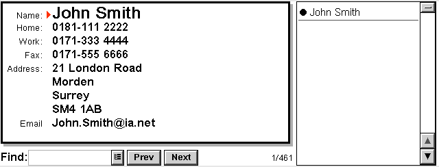
When the Convert program is run, you will see
a screen similar to the following:
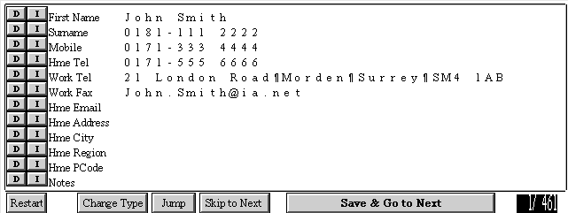
As you can see, the program has placed each field of the database into a draft field for export. However, the mapping of the fields is not correct, and it would take ages to correct the mapping for each record we have to convert. Instead, we will alter the mapping of database fields to draft contact fields.
Press Ctrl-F or select from the menu options. The following screen will then be shown:
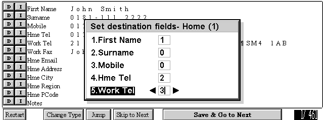
This is the first page of the mapping of the fields for the HOME contacts template. I have amended the mapping so that no database fields are placed in the "surname" or "mobile" fields, and fields 2 and 3 are mapped to Home telephone and Work telephone respectively.
Press <Return> and the second page will be shown:
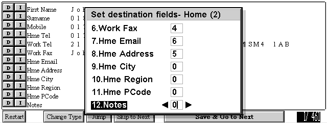
Again, I have mapped the fields to the appropriate Contact fields. Trial and error will be needed to get this right, but as nothing is saved until you press the "save" button, you can afford to experiment. Press <Return> again, and you will see the mapping requirements for the "work" template. Press <return> again for now, to leave these mappings as they are.
You will now see that the field mappings have altered the overall layout:
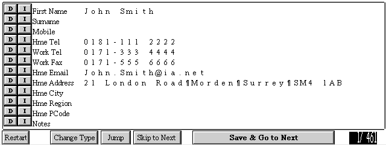
Each field has now been mapped to an appropriate spot. However, the name field and address field really need to be split up. To split up a field AT ANY POINT, simply press with the mouse on the first letter you wish to be split into the new field. In this example, we will click on the "S" of "Smith":
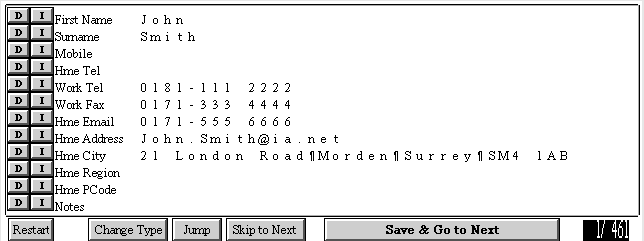
The field has been split into two fields, and the subsequent fields have all moved down by one (the trailing space after "John" has also been removed). In order to bring the other fields back into line (as they have all moved off-line by one) simply press the "D" button at the side of the line marked "Mobile". (The "D" button deletes the current line, while the "I" button inserts a line at that spot, and moves all subsequent fields down by one). The screen will then look as follows:
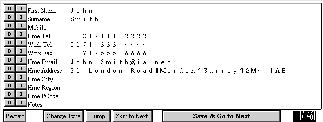
Next, click on the "M" of Morden to split the address onto the correct lines, and then the "S" of Surrey and the "S" of SM4. Now all the address fields are matched up.
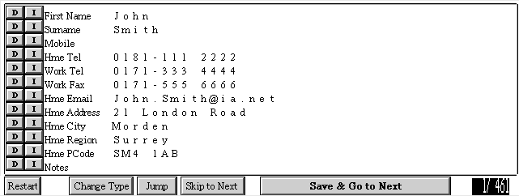
The record is now ready for transfer to the Contacts App! Press "Save
and Go to Next" to process the next record.
It is also possible to copy and paste lines. In the above example,
if we had clicked on the field TITLE of the Home Email (ie clicked on the
caption "Hme Email"), then the the email field would have been cut, as
shown below:
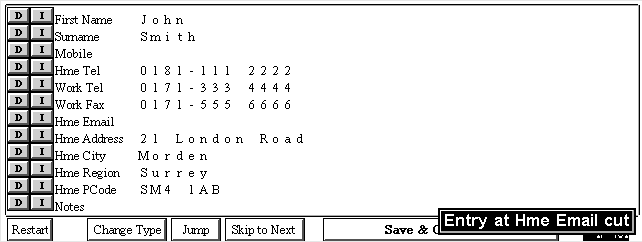
If we then click on the "Notes" caption, then cut entry would be pasted into the new field, as follows:
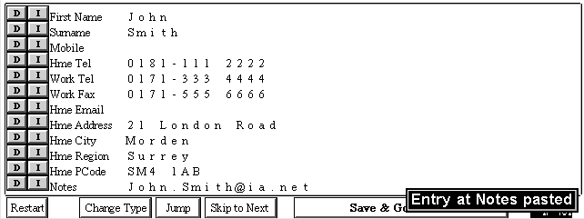
Note: The paste system will overwrite any data at the overwrite point!
Sorry for the non-standard GUI, but it is a quick and easy way of manipulating
the data without cluttering up the screen with yet more buttons...
The "Restart" button will allow you to re-retrieve the web-page,
in case you made an error in formatting the data. No data is written until
the "Save and Go to next" button is pressed, so errors only cost time.
The "Change Type" button is discussed below.
The "Jump" button allows you to move to any specific data record (in case you stopped importing data records and wish to carry on where you left off).
The "Skip to next" button moves to the next Database record WITHOUT SAVING THE CURRENT RECORD TO THE CONTACTS file. This is useful as not all the Data records are suitable for import into contacts (such as records which contain only inserted objects, etc etc).
The "Save and Go to Next" button saves the current record to the Contacts
data file. From this point on, you will have to edit the data for that
record in the Contacts App - no further editing is possible in ConvertData,
though you can of course convert the record again (in which case you will
have two records in the Contacts book!).
The program supports two data templates - one for data records which
consist mainly of personal records, and one for data records on companies.
The data fields are different for each.
The program does not allow a data record to fill all the contacts fields (this is due to a limitation on the screen size rather than anything else, though few data records will contain the same amount of information as a contacts record). Instead, you must choose which template to use when preparing your data for import.
For example, if we had come accross the following data record, after writing the data for "John Smith" above:
Obviously the captions are not appropriate for the record! However, if we press the "Change Type" button, then the field captions will change.
Note: Upon using "Change Type", the import filter used for the data will change also to the selection made in "Import Fields" as discussed above for the "Individual" data template. As before, you may edit the import filters until the data is imported satisfactorily.
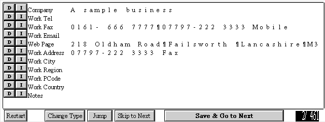
As the Contact fields are now more appropriate, we can break up the data as before and prepare the record for export to the Contacts app:
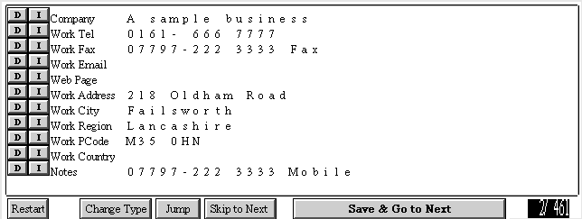
Pressing "Save and Go to Next" will save the record (in the "Business" tab of the Contacts fields) and move to the next file.
Note: You can switch between data templates as often as you wish. No
data is saved to the Contact file until you press the "Save and Go to Next"
button.
Please note that due to a bug (I think) in my copy of ER5, the emulator bombed out when the program was terminated. It still transferred all the data across to the contacts file before it died, though, so it was no more than an annoyance.
Don't contact me! :-)
If you are having problems using the program, please re-read the instructions and play around with the program - you will not write any data until you press the "save" button, so you can feel free to play around, and hit "restart" when things get messy.
If the program bombs or behaves in a strange way, then please send me
a SHORT email on Cornelius.Mawby@TheOffice.Net.
All the software on these pages is FREE, and is provided with absolutely
no warranty whatsoever. The software has worked for me in practice, but
if it destroys
your data/machine/life, then you have no recourse to me. I suggest
that you ensure you have a COMPLETE backup of all your data before using
any of these
programs (it's a good idea in any event).